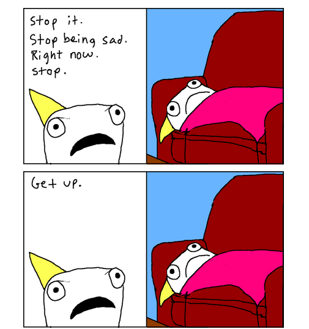
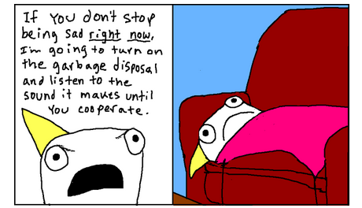
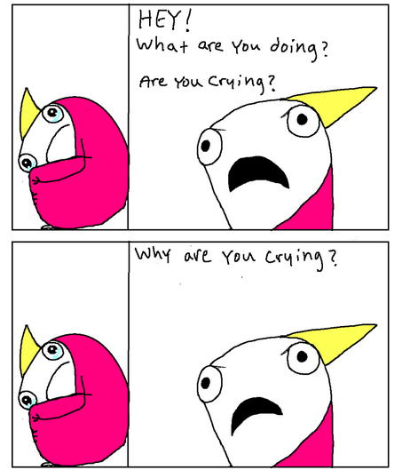
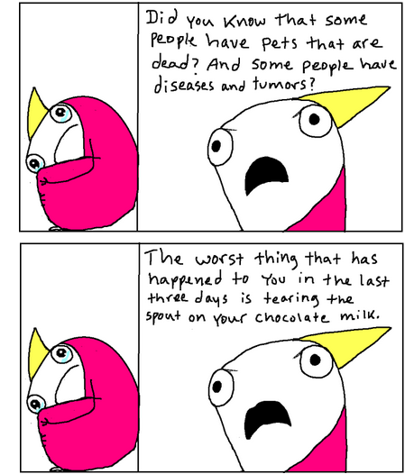
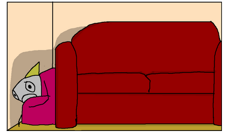
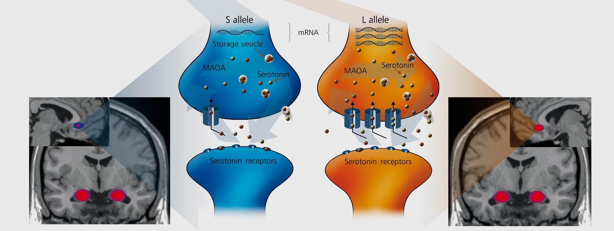
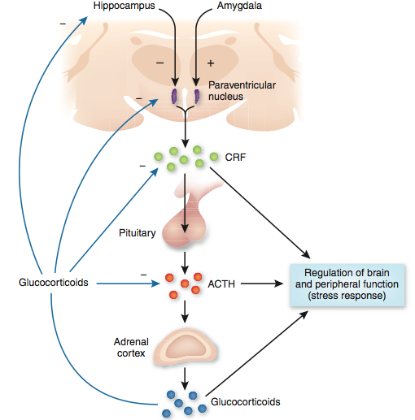

Contents
Introduction
Major Depressive Disorder (MDD), also known as depression, is a mental illness characterized by despondency, fatigue, hopelessness, and anhedonia. Other symptoms include, but are not limited to, insomnia, feelings of guilt and worthlessness, physical aches and pains, difficulty concentrating, irritability, and changes in appetite. Individuals with depression may experience all or some of these symptoms. 350 million people worldwide suffer at least one depressive episode in their lifetime. It is the leading cause of disability worldwide.
What is it like to be depressed?
The following is an excerpt from the Adventures in Depression post from the blog, Hyperbole and a Half. It is a good representation of depression.
I tried to force myself to not be sad.
But trying to use willpower to overcome the apathetic sort of sadness that accompanies depression is like a person with no arms trying to punch themselves until their hands grow back. A fundamental component of the plan is missing and it isn't going to work.
When I couldn't will myself to not be sad, I became frustrated and angry. In a final, desperate attempt to regain power over myself, I turned to shame as a sort of motivational tool.
 But, since I was depressed, this tactic was less inspirational and more just a way to oppress myself with hatred.

Which made me more sad.
Which then made me more frustrated and abusive.
Show References
Hide References
Symptoms
Depression affects all aspects of one's life and can have a devastating effect on overall quality of life. People who suffer from major depression may experience a range of symptoms from appetite changes to suicidal ideation. The following is an excerpt from an interview with a man named James who suffers from major depression. He expresses his experience with the illness and his words display his symptoms of sleep disturbance, feelings of guilt and worthlessness, difficulty concentrating, social withdrawal, and irritability.
I first noticed symptoms during sophomore year of college, when I started having difficulty leaving my room for classes and concentrating on schoolwork. Also, although I had always been anxious in certain social situations, it seemed to bother me more. These symptoms lightened with time, then intensified again. More often than not, a disappointment in my personal life set off a crisis that affected all the other aspects of my life. Five years later, I was diagnosed with depression.
I eventually had to leave school and return to live with my parents. I stayed with them for three years and didn't have a job for a large chunk of that time. I was extremely miserable. All day I would yearn for night, so I could take my [sleep medication] and black out for several hours. Of course, in a few hours, I would wake up with a jolt and an immediate feeling of pure terror that would stay with me for the rest of the day. I would stay in bed, listening to my parents get ready and leave for work. I hated the television shows that they watched so badly, I wanted to go out and smash the TV. Once they left, I would get up. I didn't shower or brush my teeth. For most of the day, I would stay in my room, keeping the fan on, so as not to hear noises from outside. I stayed on my computer all day reading, watching shows, or looking at my former friends' social networking profiles. I didn't speak with anyone during that time, and ignored any messages. I was afraid of leaving the house, and it was a struggle to walk a few blocks to the dentist. Every day seemed endless. To pass the time, I smoked constantly. I felt ashamed that I wasn't able to support myself and angry that my life seemed to have imploded, and terrified that I would spend the rest of my life like this. To numb the fear and guilt, I would drink a six-pack over the course of a day. The day got a little easier once my parents got home, and, like I said, the best part was falling asleep.
Diagnosis
Healthcare providers diagnose depression following the criteria laid out in the Diagnostic and Statistical Manual of Mental Disorders (DSM). According to DSM-5, a diagnosis of depression can be made if, during the same 2-week period, a person experiences at least five of the following nine symptoms almost everyday:
- 1. Depressed mood most of the day
- 2. Loss of interest or pleasure in activities once enjoyable
- 3. Significant weight change or appetite
- 4. Insomnia or hypersomnia
- 5. Psychomotor agitation or retardation
- 6. Fatigue
- 7. Feelings of worthlessness or guilt
- 8. Difficulty concentrating
- 9. Thoughts of death or suicidal ideation
These symptoms must cause significant impairment in social or occupational functioning and quality of life. The symptoms must not be caused by substances or another medical condition.
Problems with Diagnosis
There are a number of factors that can make it difficult to definitively diagnose a set of symptoms as depression.
Alternative illness presentations
Because a person must have five of nine symptoms from the DSM to be diagnosed with this disorder, there is the potential for two people to share only one symptom, but receive the same diagnosis. For example, consider the symptomology of three patients diagnosed with depression:
Alice suffers from:
- 1. Depressed mood most of the day
- 2. Loss of interest or pleasure
- 3. Significant appetite decrease
- 4. Insomnia
- 5. Psychomotor agitation
Ben suffers from:
- 1. Depressed mood most of the day
- 2. Suidical Ideation
- 3. Significant appetite increase
- 4. Hypersomnia
- 5. Psychomotor retardation
Cassie suffers from:
- 1. Depressed mood most of the day
- 2. Fatigue
- 3. Significant appetite decrease
- 4. Difficulty concentrating
- 5. Suicidal ideation
The only symptom that afflicts all three patients is depressed mood most of the day (in bold). Alice and Ben both suffer from symptoms related to altered appetite, dysfunctional sleep patterns, and disrupted psychomotor behavior, yet their symptoms are on opposite sides of the spectrum (in italics). Note that Cassie, who also experienced depressed mood, does not have any symptoms related to appetite and motor behavior. These individuals have very different illness presentations, but all have the same DSM diagnosis.
Given the assumption that depression is a brain-based illness, different symptoms of depression are likely to have different brain correlates. For example, appetite changes are caused by altered hypothalamic activity, because the primary function of the hypothalamus is homeostasis. Since not all patients who suffer from depression have changes in appetite, some, but not all, depressed patients may have dysfunctions of the hypothalamus. This makes it difficult to determine the neurobiology of MDD given different patient neurological profiles.
Comorbidity of mental illness
A second issue involves the co-morbidity of mental illnesses. For example, depression and anxiety often co-occur in the same individual. It is possible for some mental disorders to be risk factors for others, just as a physical disorder such as diabetes is a risk factor for neuropathy and cardiovascular disease. For example, bipolar disorder is a risk factor for a substance abuse disorder. Similarly, MDD is a risk factor for anxiety and vice-versa. While this may be the case for some illnesses, co-morbidity might also reflect different patterns of symptoms resulting from different disruptions in the same brain circuit. Depression and anxiety involve some of the same circuits, so that may be the reason that they co-occur. Therefore, major depression and generalized anxiety disorder may often occur together because they are different expressions of the same underlying disease processes.
Lack of biomarkers
There is no blood test that can declare that a person has depression, but researchers are looking to identify biomarkers, measurable indicators of the presence or severity of disease, that can be used to assist in the diagnosis of depression and other mental illnesses. Without a physical test for depression, how do we know when normal sadness ends and depression begins? It is up to trained clinicians to make this determination using the guidelines outlined in the DSM as well as the reported level of subjective distress and impaired functioning by the patient.
Show References
Hide References
Risk Factors
There is no known single cause of depression, but there are factors that increase one's risk of suffering from the disorder. Some potential risk factors include head injury, childhood trauma, genetics and gender.
- Head Injury: Depression is the most common psychiatric illness after traumatic brain injury. This may result from diffuse damage to brain tissue.
- Childhood Trauma: Severe abuse and stress during childhood increase the likelihood of depression.
- Genetics: The risk for depression is approximately 30% genetically determined. Many genes affect the phenotypic expression of depression, so the genetics of depression is not a simple Mendelian heredity.
- Gender: Depression is twice as common in women than in men, but this might be because women are more likely to seek treatment. It may also be due to gender-specific hormonal differences.
Show References
Hide References
Genetics and Epigenetics
There is no known single cause of depression. In fact, the extant research suggests that depression is multiply determined. However, there are certain factors that appear to significantly increase the risk of depression. Researchers are finding that many factors may play a role in whether or not an individual suffers from the disorder. Genetics and epigenetics are major areas of interest for scientists researching the causes of depression.
Genetics
There is evidence that the risk for depression is approximately 30% genetically determined. The relationship between genetics and environment, known as epigenetics, versus genetics alone, appears to be more crucial for increasing the risk of depression. Epigenetics is discussed below.
Depression is polygenetic, meaning that many genes affect phenotypic expression. Although genetics alone may only be a weak predictor of depression, there are key genes that increase the risk of an individual getting the disorder such as the serotonin transporter gene.
Serotonin transporter gene (SERT)
The SERT gene codes for the serotonin transporter, which recycles serotonin, a neurotransmitter, back into the presynaptic cell. This controls the amount of serotonin available in the brain. The serotonin transporter is one of the main targets of antidepressants known as selective serotonin reuptake inhibitors (SSRIs). Medications such as Zoloft, Paxil and Prozac fall into this class of antidepressants.
A region on the serotonin transporter gene has been found to determine how stressful life events play a role in the development of depression. The SERT gene has two alleles: short and long. The short allele is associated with a reduced number of serotonin transporters as well as a decreased functionality of transporters. With fewer transporters and decreased functionality of transporters, more serotonin is broken down by enzymes rather than recycled, decreasing the amount of this neurotransmitter in the brain; therefore, people who have one or two copies of the short allele, and consequently less serotonin, are more likely to experience depressive symptoms and suicidality compared to those with two long alleles. This is evidence for the role of serotonin in depression.
Figure 1. SERT: Short allele neuronal representation (blue) and long allele neuronal representation (orange). Higher concentrations of serotonin are seen in the synaptic cleft of the long allele neuron. Less connectivity is shown between the amygdala and the cingulate gyrus in individuals with the short allele. (Gerretsen et al., 2009)
Individuals with at least one short SERT allele are also more susceptible to post-traumatic stress disorder (PTSD), post-trauma suicide attempts, substance abuse, anxiety, and poor self-regulation of negative affect and other stress-related conditions. Interestingly, children with the short allele show more regional activation to sad movies than those with two long alleles. The short SERT allele leads to problems coping with stress, but how this increased susceptibility to stress affects one's life will depend on multiple factors such as other genes, life circumstance, family support, coping mechanisms, and occurrence of specific trauma.
Epigenetics
Researchers are now putting a lot of time into studying epigenetics, how the environment interacts with the genome to initiate heritable changes without altering the genetic sequence. In neuroscience research in particular, scientists are interested in learning how epigenetics alters neuroplasticity. Neuroplasticity refers to changes in neural pathways and synapses. Although genetics have been found to play a role in illnesses such as bipolar disorder, autism and schizophrenia, the interaction between genetic and non-genetic factors, in particular the stress response, are foremost with depression and anxiety.
HPA Axis
A good example of epigenetic change involves the hypothalamic-pituitary-adrenal (HPA) axis, which regulates the stress response. Activation of the HPA axis, a feedback loop, is triggered by stress. The hypothalamus releases a chemical called corticotropin releasing factor (CRF). The release of CRF signals the pituitary gland to secrete adrenocorticotropic hormone (ACTH), which then signals the production of glucocorticoids from the adrenal cortex.

Figure 2: The HPA axis is under inhibitory control of the hippocampus, and excitatory control of the amygdala. Hyman, S.E. (2009).
Glucocorticoids are steroids involved in immunosuppression, but these chemicals also play a large role in the stress response because glucocorticoid receptors (GR) are located throughout the brain, and in particular the hippocampus. Glucocorticoid binding to GRs in the hippocampus leads to the inhibition of hypothalamic neurons responsible for CRF release. Decreasing the amount of CRF released from the hypothalamus lowers the stress response.
The result of prolonged or early stress to the HPA axis, such as an overall decrease in glucocorticoid receptors, can occur prenatally and postnatally. Fetuses of women who suffer from stress, depression or anxiety, or undergo glucocorticoid treatment during pregnancy, experience neurodevelopmental effects of glucocorticoids that pass through the placenta. The transmission of glucocorticoids leads to an increase in fetal HPA axis activity. Maternal stress and depression during pregnancy have been associated with disturbances in neurological and cognitive development, and behavior in children. This maternal stress leads to increased glucocorticoid exposure. Excess glucocorticoid exposure during the prenatal stage is also associated with psychiatric disorders such as depression, anxiety and substance abuse.
Severe abuse and stress during childhood can also affect the stress response. Despite difficulty in controlling for genetic predispositions, researchers have shown that children cared for during their early years by depressed mothers often have heightened activity of the HPA axis, increasing the overall risk of developing mood disorders in adolescence.
Adverse early life experiences, therefore, may lead to epigenetic changes to the HPA axis, making affected individuals more reactive to stress. In a study using postmortem hippocampal tissue from (a) suicide victims with a history of sexual abuse, physical abuse and/or severe neglect, (b) suicide victims without a history of abuse and (c) non-suicide controls, it was found that the total GR expression in the hippocampus was reduced in abused suicide victims, but not in the other two study groups.
Reduced GR levels make the hippocampus unable to inhibit hypothalamic CRF releasing neurons, which cause high HPA activity. CRF also causes increased anxiety activity in the amygdala and stress-related neuronal damage in the hippocampus, including loss of branches and spines in dendrites.
Once an epigenetic change occurs, it may persist for a significant period of time. However, it is not yet known how long these changes persist, and/or whether these effects are permanent.
Fortunately, the activity of a child's HPA axis can be altered. Attentive and attuned parenting can mitigate or buffer the effect that everyday distress has on the child. This may lead to a reduction in the risk for illness associated with prolonged activation of the HPA axis.
Show References
Hide References
Neural Circuits
In the past, brain research focused on the search for single areas of the brain that link to particular functions and dysfunctions, but increased understanding of the degree to which the brain is interconnected has led to a focus on neural circuits.
Disruptions in neural circuits, groups of interconnected neurons that process thoughts, feelings and behaviors, are thought to be associated with psychiatric disorders including depression. Genetic mutations, epigenetic changes, stress, malnutrition and brain lesions are some possible causes of disruption in a neural circuit. Disordered circuits can cause the brain to get stuck in a loop of abnormal activity. Researchers are now identifying locations of malfunctioning neural circuitry in disorders such as in anxiety, which results from hyperactivity of the amygdala, and obsessive-compulsive disorder, resulting from abnormalities in the striatum.
In depression, hyperactivity in a region of the prefrontal cortex known as the subgenual cingulate seems to be associated with the illness. Interconnected with the subgenual cingulate are the hypothalamus, which controls sleep, energy and appetite; the amygdala and insula, which affect mood and anxiety; the hippocampus, which is important for memory; and the frontal cortex, which is important for motivation and insight. Because the subgenual cingulate mediates the activity levels of these other regions in the circuit, dysfunction in the subgenual cingulate might lead to disruption in the entire circuit, and therefore, to the symptoms of depression.
The subgenual cingulate is dense with serotonin transporters. Researchers have discovered that individuals with a short allele of the serotonin transporter gene have a decreased amount of brain tissue in the subgenual cingulate. A short allele also leads to reduced connectivity between the subgenual cingulate and the amygdala.
A decrease in activity of the subgenual cingulate is related to symptom improvement, regardless of whether the reduction of activity is due to medication or psychotherapy. Also, direct electrical stimulation near the subgenual cingulate is associated with decreased activity in the region and a corresponding reduction in depressive symptoms. This form of treatment works even for individuals whose depression did not improve after standard treatments.
Show References
Hide References
Treatment
There are a number of options available to treat depression including psychological treatments, antidepressants and somatic treatments, such as electroconvulsive therapy. Lifestyle behaviors, such as exercise and meditation have also been shown to be effective treatments for depression.
Psychological Treatments
Psychological treatment, also known as psychotherapy, involves talking with a trained mental health professional in order to help one recover from psychological disorders, such as depression. There are many forms of psychological treatments, two of which are psychodynamic therapy and cognitive behavioral therapy.
Psychodynamic Therapy
Psychodynamic therapy helps patients understand how unresolved issues from past experiences have shaped their current mood and behavior. Research suggests that not only is psychodynamic therapy at least as effective as other evidence-based therapies, but its positive effects are also longer lasting.
Cognitive Behavioral Therapy (CBT)
CBT helps patients recognize, evaluate, and replace negative thinking with more healthy thought patterns as well as change patterns of behavior that are the result of these negative thoughts. CBT is at least as effective as medication at treating depression and its effects are longer lasting.
Medication
Antidepressant medications work by targeting neurotransmitters associated with MDD, by either blocking reuptake of the neurotransmitters or mimicking their effects, with an overall goal to increase the amount of particular neurotransmitters within brain.
Traditional antidepressants
Monoamine Oxidase Inhibitors (MAOIs)
MAOIs target norepinephrine, serotonin and dopamine, elevating the levels of these neurotransmitters by inhibiting an enzyme known as monoamine oxidase, which breaks down these neurotransmitters. A downside to MAOIs is that they have significant food and medication contraindications.
Tricyclic Antidepressants
Tricyclics block the reuptake of norepinephrine and serotonin. Tricyclic antidepressants are effective at treating depression, but selective serotonin reuptake inhibitors (SSRIs) have replaced them as standard antidepressant treatment because tricyclics tend to have more severe and a greater number of side effects than SSRIs.
Second Generation antidepressants
Selective Serotonin Reuptake Inhibitors (SSRIs), Selective Norepinephrine Reuptake Inhibitors (SNRIs), Norepinephrine Dopamine Reuptake Inhibitors (NDRIs)
Second generation antidepressants target the same neurotransmitters, namely, serotonin, norepinephrine, and dopamine, but to different degrees. They are the most commonly prescribed antidepressants, due to their causing fewer side effects than traditional medications.
Somatic Treatments
Transcranial Magnetic Stimulation (TMS)
TMS is a treatment in which a large electromagnetic coil creates a magnetic field near the forehead, stimulating neurons in the prefrontal cortex, which is involved in mood control. TMS is used when antidepressant treatment does not work.
Electroconvulsive Therapy (ECT)
ECT is a brain stimulation procedure in which electrodes are placed on the scalp and an electric current is sent through the brain in order to cause a short seizure. ECT is mostly used to treat severe depression. It is also used when rapid treatment results are needed, and waiting for antidepressants to take effect would be impractical, such as for suicidal patients.
Deep Brain Stimulation (DBS)
DBS is a surgical procedure in which electrodes are implanted into the brain. These electrodes send electrical impulses into the brain to the white matter tracts leading to the subgenual cingulate (part of the DMN), in order to regulate brain activity in this region. DBS is currently being studied in clinical trials to treat severe depression.
Alternative Treatments
Fish oil
Studies suggest fish oil supplements may be beneficial in the treatment of mild to moderate depression. People with depression may have low levels of EPA and DHA both found in fish oil. In addition, fish oil is anti-inflammatory, and depression has been associated with low levels of inflammation in the brain.
SAMe
SAMe is a synthetic form of S-adenosylmethionine, which occurs naturally in the body. Researchers are not sure how SAMe works to treat depression, but it is believed that it increases the amount of serotonin in the brain, similar to many antidepressants. Studies suggest that SAMe may be as effective as antidepressants at treating mild to moderate depression without the side effects.
St. John's Wort
St. John's Wort is a popular depression treatment in Europe that may be helpful in mild to moderate depression. It should be used with caution as it can interfere with medications such as antidepressants, HIV/AIDS medications, birth control pills, blood thinning meds, chemotherapy drugs, and anti-rejection drugs used after an organ transplant.
Exercise
Regular exercise has been shown to be as effective at treating depression as medication, and its effects last longer than those of medication. Exercise improves mood by increasing the effects of endorphins, which are natural opioids within the body. A new theory of the mood-enhancing effects of exercise is that it stimulates norepinephrine, one of the neurotransmitters known to improve mood.
Mindfulness and Meditation
See section on mindfulness and depression